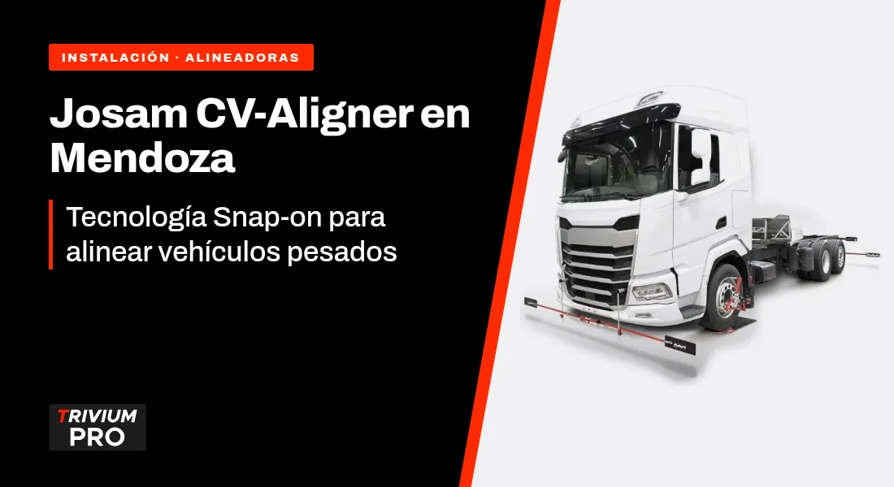

En Trivium Center seguimos apostando a la tecnología de primer nivel para talleres especializados. Esta semana realizamos la instalación de una alineadora de camiones Josam CV-Aligner, en LANZ Neumáticos – DUNLOP Mendoza, concesionario oficial y referente en la zona.
Este equipo, fabricado por Josam (Suecia) y parte del grupo Snap-On, está diseñado para el alineado de camiones, ómnibus y vehículos pesados con una precisión milimétrica, apoyándose en sistemas de medición por cámaras digitales de alta resolución.


🚛 ¿Qué es la Josam CV-Aligner?
La Josam CV-Aligner es una de las alineadoras más avanzadas del mundo. Utiliza tecnología de imagen para capturar ángulos y posiciones en tiempo real, sin necesidad de contacto mecánico.
Entre sus principales ventajas se destacan:
- 📐 Medición 3D por cámaras digitales
- 🧭 Diagnóstico completo en minutos
- 🧲 Imanes para fijación rápida sin desmontar ruedas
- 🖥 Software intuitivo con reportes automáticos y trazabilidad
- 🌐 Respaldo de Snap-On y actualizaciones constantes
Además de mejorar la precisión, reduce considerablemente el tiempo de alineación, permitiendo a talleres trabajar más rápido y con menos esfuerzo.
🌟 ¿Por qué invertir en una Josam?
Sabemos que no es un equipo económico, pero sí una inversión que cambia la escala de trabajo en cualquier taller.
Para quienes trabajan con flotas, transporte o vehículos pesados, contar con una Josam CV-Aligner significa:
- Más productividad
- Más confianza del cliente
- Diferenciación frente a la competencia
- Retorno garantizado por mayor eficiencia operativa
En Trivium Center brindamos asesoramiento técnico, instalación profesional y soporte postventa en todo el país.
Estamos orgullosos de acompañar a LANZ Neumáticos – Dunlop Mendoza en este paso hacia la excelencia.
📍 ¿Querés llevar tu taller al siguiente nivel?
Contactanos. Distribuimos Josam en Argentina.